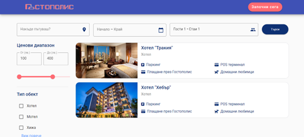
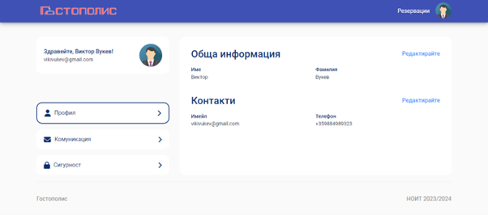
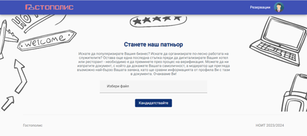
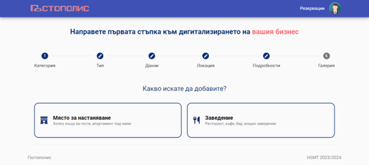
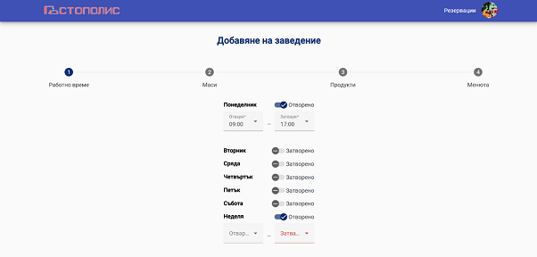
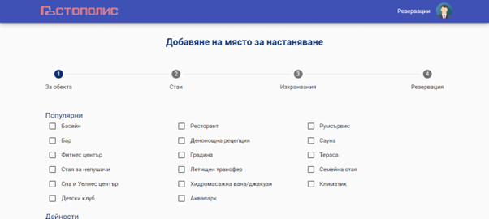
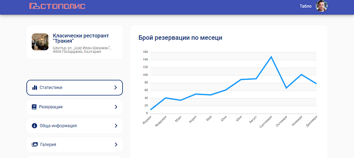

Регистрация
Всеки потребител, който за пръв път достъпва приложението, е необходимо да премине през формата за
регистрация, за да достигне до вътрешните страници. Тя съдържа следните полета:
- • Първо име – от 2 до 50 символа, задължително поле;
- • Фамилно име – от 2 до 50 символа, задължително поле;
- • Имейл – въведеният имейл адрес се валидира,
задължително поле;
- • Телефонен номер – задължително поле;
- • Парола – минимален брой символи: 8;
- • Повтори паролата – Подсигурена е проверка за
съвпадение на въведената парола чрез compare-password
директиравата, която позволява преизползването ѝ на други места в приложението;
Вход
Влизането във вече създаден профил се осъществява през компонентата Вход. Необходимо е
въвеждането на имейл адрес и парола.
Търсене на обект
След задаване на параметри за търсене, потребителят може да достъпи всички обекти, отговарящи на
критериите. При избор на обект се отваря страницата за детайли. При
заведението може да се видят и менютата в обекта, както и дали в момента е отворено или затворено.

Създаване на резервация
След избор на оферта ще бъдете препратени към страница за създаване на резервация. Необходимо е да
подадете данни за контакт или да използвате автоматично попълнените от вашия профил.
Моят профил
Всеки един потребител може да променя информацията към профила. Ако собственик промени данни си, то
тогава е необходимо той отново да премине през процеса за удостоверяване на самоличността.
Информацията, която един потребител може да редактира/управлява включва:
- • Име
- • Фамилия
- • Имейл
- • Телефонен номер
- • Управление на известията - потребителят може да
включи/изключи
известяването по имейл при извършване на определени процеси (напр. влизане в профил).
- • Промяна на парола – Изпраща се имейл с линк, от който
се извършва промяната.
- • Профилна снимка

Заявка за партньорство
При изпращане на заявка за партньорство документът трябва да бъде в pdf или jpg формат. Документът
трябва да съдържа трите имена и снимка на лицето. Допълнителната информация би могла да бъде закрита.

Добавяне на обект
Създаването на обект включва следните характеристики:
- • Тип на обекта – заведение или място за настаняване;
- • Точен тип на обекта
- • Име – Официалното име, което се използва за данъчни
цели или държавна регистрация. Това може да
бъде името на фирма или физическо лице;
- • УИК/ЕИК – Универсален идентификационен код (УИК) или
единен идентификационен код (ЕИК);
- • Документ, доказващ притежанието на обекта
- • Локация
- • 5-звездна оценка
- • Информация дали обектът има наличен POS терминал и дали
разрешава плащания през нашата платформа
- • Информация дали обектът има наличен паркинг
- • Информация дали се допускат домашни любимци
- • Говоримите езици от персонала на обекта
Създава се и галерия на обекта, като трябва да се добавят най-малко 5 изображения, от които
партньорът трябва да избере една, която да бъде основна за обекта.

Добавяне на заведение
За всяко заведение се подава следната информация:
- • Работно време – за всеки един отделен ден от
седмицата се посочва час на отваряне и час на затваряне, предлаганите часове са през интервал от 30
минути;
- • Маси – добавя се всяка една маса като се задава
номер на масата, капацитет, информация за това дали масата е за пушачи или непушачи и дали е
вътрешна или външна;
- • Продукти – добавят се всички продукти, които
заведението предлага. За всеки продукт се подава име, цена, грамаж, категория, съставки, както и
изображение;
- • Меню – създават се отделните менюта като всяко има
име. Към менютата се добавят вече създадените продукти.

Добавяне на място за настаняване
Всеки един обект от тип място за настаняване пази следната информация:
- • Удобства – стандартни удобства, които притежава
мястото за настаняване;
- • Стаи – за всяка една се посочва тип, име, номер,
етаж, цена за нощувка (в лв.), капацитет, информация за леглата, принадлежности в банята и общи
удобства;
- • Изхранвания – ако има такива, се посочва вид,
начален и краен час;
- • Часове за настаняване и напускане

Добавяне на място за настаняване
Всеки един обект от тип място за настаняване пази следната информация:
- • Удобства – стандартни удобства, които притежава
мястото за настаняване;
- • Стаи – за всяка една се посочва тип, име, номер,
етаж, цена за нощувка (в лв.), капацитет, информация за леглата, принадлежности в банята и общи
удобства;
- • Изхранвания – ако има такива, се посочва вид,
начален и краен час;
- • Часове за настаняване и напускане
Управление на обект
От страницата за детайли на обект може да достъпите и модула за управление на обект. В него са включени
всички характеристики за обекта, които се изискват и при създаване. Информацията може да бъде
редактирана, изтривана, а може и да се добавя такава. Важно е да отбележим, че при редакция на
информация от частта "Обща информация", обектът ще бъде временно затворен, докато администратор провери
въведените данни.
